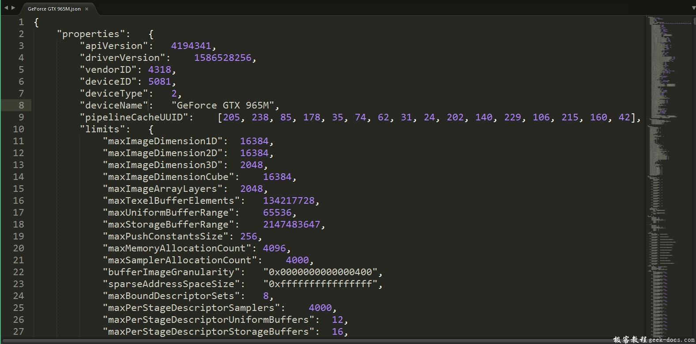

Vulkan 开发环境搭建，相信很多人在开始学习Vulkan开发的起始阶段都会在开发环境的配置上下一些功夫，那么本问将会引导大家快速的完成Vulkan在Windows下的开发环境，并使用几个常用的开发工具库。
Vulkan 开发环境搭建 SDK
开发Vulkan应用程序所需的最重要的组件就是SDK。它包括核心头文件、标准的Validation layers及调试工具集、和驱动Loader，如果现在这些关键词不是很明白的话，不要紧，我会在后续的教程上向大家说明。
首先下载SDK，登录LunarG网站https://vulkan.lunarg.com/, 选择Windows平台下的最新SDK下载安装，特别留意的是这个SDK包括了很多的内容，诸如Samples、Documents，这些资料非常有助于学习。
继续安装并注意SDK安装的位置，安装完成后我们首先验证您的PC 显卡驱动程序是否支持Vulkan，进入安装SDK的目录,打开Bin32目录运行vkcube.exe演示程序，您将会看到以下内容。
如果您收到了异常信息，请确保您的显卡驱动程序是最新的，且硬件驱动支持Vulkan运行时，具体细节可以到各显卡厂商官网确认。
此目录中还有另外两个程序对开发有价值，vkjson_info.exe程序生成一个JSON文件，并在使用Vulkan根据具体的硬件参数有选择性的开启功能。

当然这里也有一个地址，可以查看显卡对VulkanSDK api版本的不同支持情况。http://vulkan.gpuinfo.org/
glslangValidator.exe程序将用于将着色器从可读的GLSL编译为字节码。我们将在着色器模块一章中深入介绍这一点。 Bin32目录还包含Vulkan加载程序和验证层的二进制文件，而Lib32目录包含库。 Doc目录包含有关Vulkan SDK的有用信息以及整个Vulkan规范的脱机版本。最后，包含Vulkan头文件的Include目录。
Vulkan 开发环境搭建 GLFW
Vulkan不包含用于创建窗口来渲染内容的工具，出于跨平台的考虑，Sample中使用了SDL来作为窗口系统的实现方案，本教程将使用GLFW库创建一个支持Windows的窗口，他的优势在于将Vulkan中的其他一些平台订制的内容抽象出来。
可以在GLFW官方 https://www.glfw.org/download.html 下载最新的版本 ,在本教程中我们将使用32位库
下载后将头文件目录GLFW，静态库glfw3.lib、glfw3dll.lib、动态库glfw3.dll 分别放到VulkanSDK安装目录下的Third-Party的对应目录里。
Vulkan 开发环境搭建 GLM
Vulkan不包括用于数学计算的实用工具库,因此我们引入GLM库 ，该库专为图形API为设计，并且大量应用与OpenGL程序。
注，VulkanSDK中目前已经包含GLM在Third-Part | Include 目录中。
GLM仅包含一个头文件，所以只需要下载最新版本，同上文GLFW一样放置到VulkanSDK | Third-Part |Include 目录下即可。
Vulkan 开发环境搭建 设置 Visual Studio
从Vulkan模版中新建测试程序，注意在新项目创建完成后，Vulkan VS模版会自动创建一个基于SDL窗口的程序，在此可删除掉 或替换为下文的测试代码。
如图所示。

新建测试C++文件，并添加如下测试代码。
#define GLFW_INCLUDE_VULKAN
#include <GLFW/glfw3.h>#define GLM_FORCE_RADIANS
#define GLM_FORCE_DEPTH_ZERO_TO_ONE
#include <glm/vec4.hpp>
#include <glm/mat4x4.hpp>#include <iostream>int main() {
glfwInit(); glfwWindowHint(GLFW_CLIENT_API, GLFW_NO_API);
GLFWwindow* window = glfwCreateWindow(800, 600, "Vulkan window", nullptr, nullptr); uint32_t extensionCount = 0;
vkEnumerateInstanceExtensionProperties(nullptr, &extensionCount, nullptr); std::cout << extensionCount << " extensions supported" << std::endl; glm::mat4 matrix;
glm::vec4 vec;
auto test = matrix * vec; while (!glfwWindowShouldClose(window)) {
glfwPollEvents();
} glfwDestroyWindow(window); glfwTerminate(); return 0;
}
会遇到编译错误GLFW，现在添加具体的库引用如图。
再次运行程序，恭喜你可以看到第一个Vulkan程序运行起来了。
阅读完本篇文章后，如果还是不能在Visual Studio中，将Vulkan程序启动起来的同学，强烈推荐极客教程Vulkan Visual Studio环境配置，这篇文章会详细介绍每个步骤，如果还是有疑问的话，那就欢迎留言，大家一起探讨了。